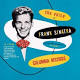
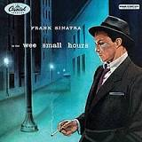
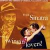
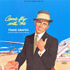
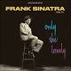
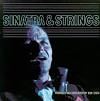
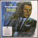
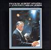
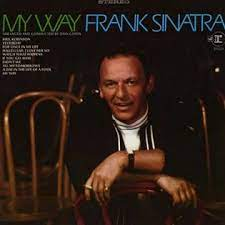
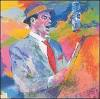

Frank Sinatra's discography is extensive, spanning over six decades and encompassing a variety of musical styles. Here are some of his most notable albums:
| Cover | Album | Year | Label | Comment |
|---|---|---|---|---|
|  | "The Voice of Frank Sinatra" | 1946 | Columbia | Sinatra's debut album, featuring hits like "All or Nothing at All" and "Night and Day." |
|  | "In the Wee Small Hours" | 1955 | Capitol | Considered one of Sinatra's best albums, this melancholy collection of ballads includes classics like "I Get Along Without You Very Well" and "Mood Indigo." |
|  | "Songs for Swingin' Lovers!" | 1956 | Capitol | A lively collection of swing-era standards, including "I've Got You Under My Skin" and "You Make Me Feel So Young." |
|  | "Come Fly with Me" | 1958 | Capitol | A travel-themed album featuring hits like "Come Fly with Me" and "On the Road to Mandalay." |
|  | "Only the Lonely" | 1958 | Capitol | Another melancholy album, featuring songs like "Angel Eyes" and "One for My Baby (and One More for the Road)." |
|  | "Sinatra and Strings" | 1962 | Reprise | A lush, orchestral album featuring hits like "All the Way" and "I've Got a Crush on You." |
|  | "September of My Years" | 1965 | Reprise | A reflective album featuring songs about aging and nostalgia, including the title track and "It Was a Very Good Year." |
|  | "Francis Albert Sinatra & Antonio Carlos Jobim" | 1967 | Reprise | A collaboration with Brazilian bossa nova composer Jobim, featuring songs like "The Girl from Ipanema" and "Quiet Nights of Quiet Stars." |
|  | "My Way" | 1969 | Reprise | A collection of standards and pop hits, including the title track, "Strangers in the Night," and "Yesterday." |
|  | "Duets" | 1993 | Capitol | A late-career album featuring Sinatra singing duets with a variety of other artists, including Barbra Streisand, Tony Bennett, and Aretha Franklin. |